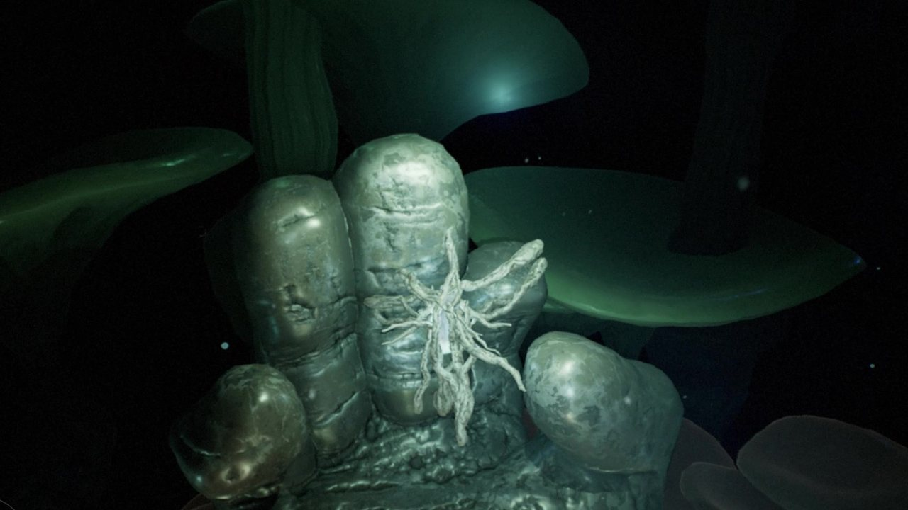
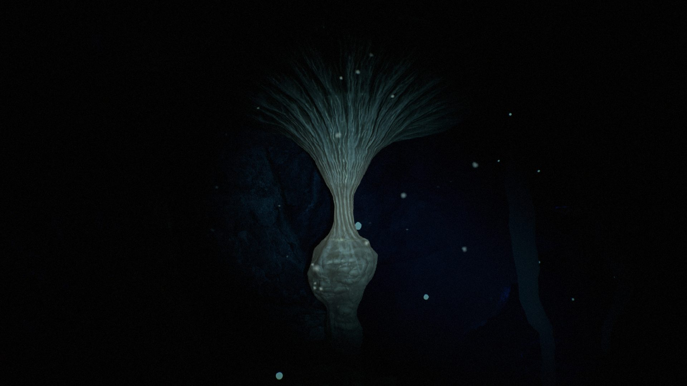
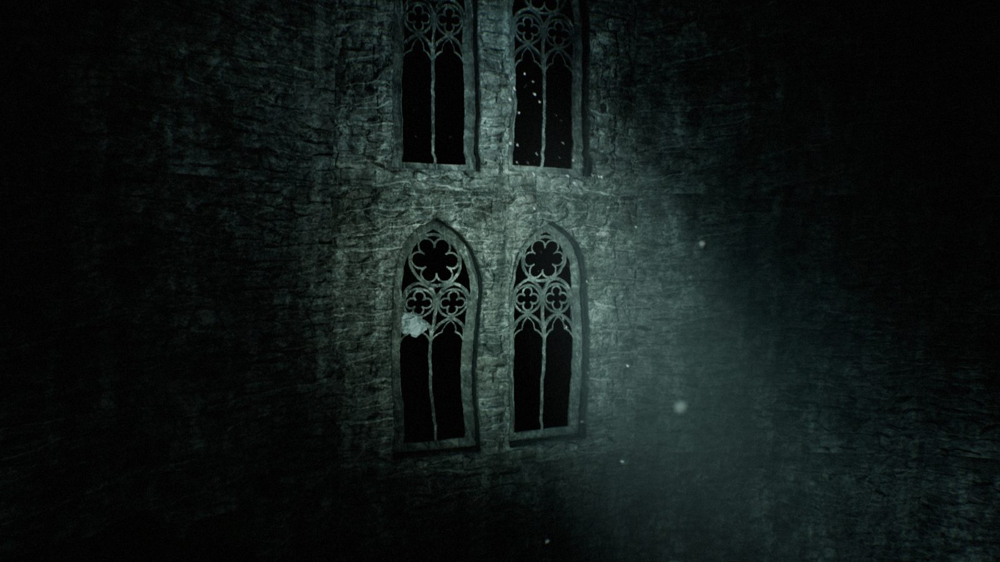
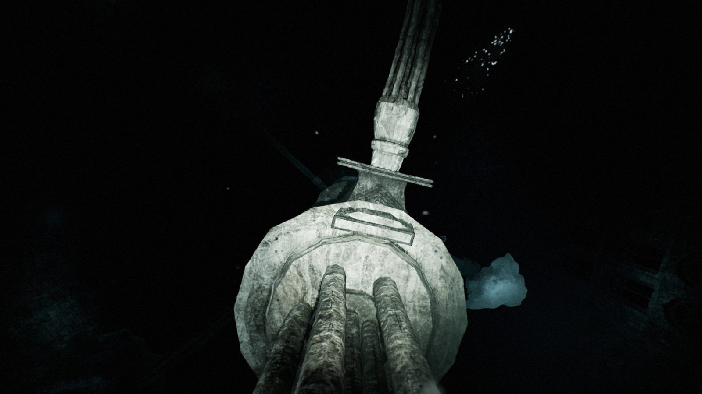
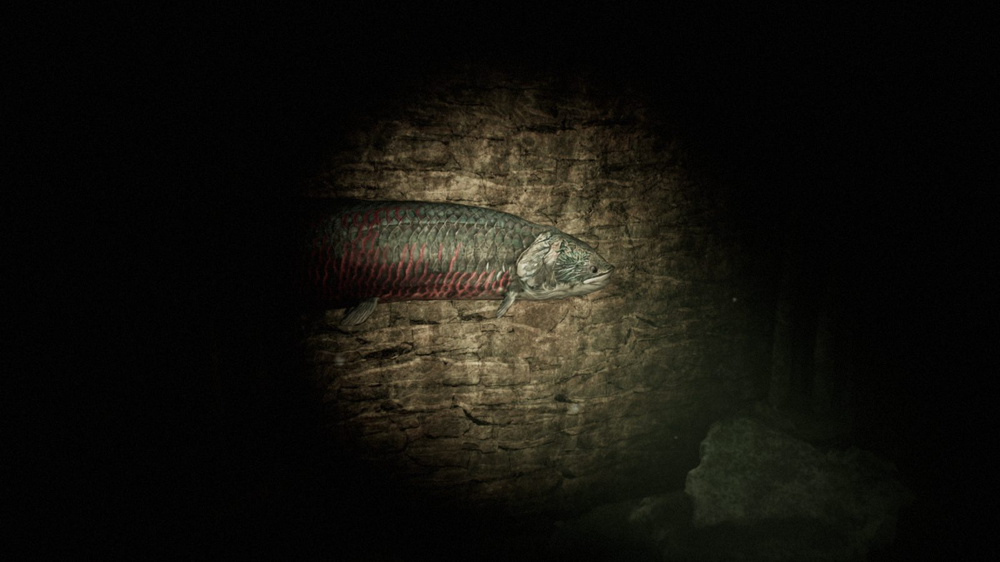
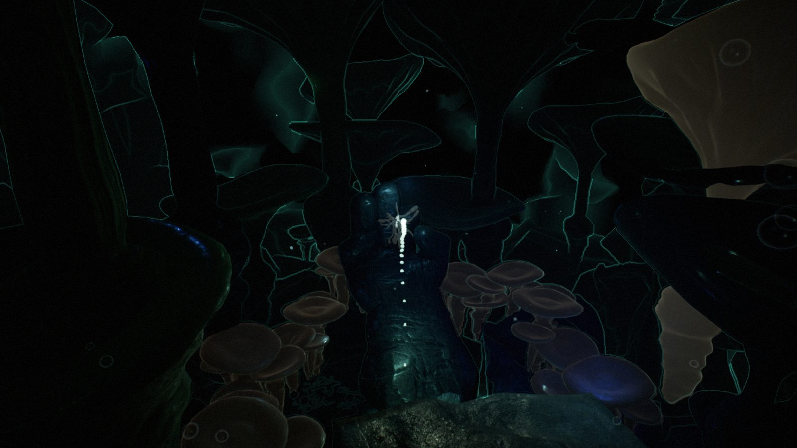
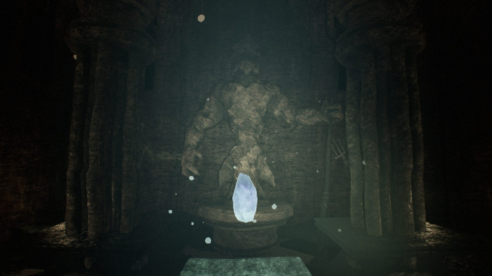

ABYSS
1인칭 수중 호러
PC (Windows)

트레일러 준비 중
“DEPTH 5,200 M.
YOUR TANK HOLDS 3 MINUTES OF AIR.”

“THE CAGE HOLDS IT.
THE WORLDS ARE OUT OF PLACE.”

“IT DOES NOT MOVE IN THE LIGHT.”

“THE ROOTS HOLD IT.
THE FOREST IS ASLEEP.”

“THE THREE WILL NOT MOVE IN THE LIGHT.”

ABYSS
1인칭 수중 호러
PC (Windows)
게임 소개 보기